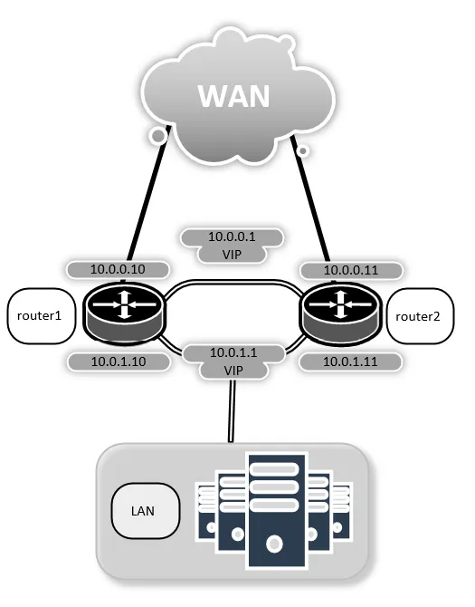

Conntrack sync
Conntrack Sync (Connection Tracking Synchronization) is used to preserve active sessions during a failover between the active and backup routers in a high-availability (HA) pair.
Each active session on the active router is tracked as a local conntrack entry, and for some protocols, expect entries are also created for anticipated follow-up connections (for example, the FTP data channel or SIP media streams). Conntrack sync continuously copies these entries to backup routers over one or more dedicated interfaces, so it holds a current picture of every active session in near real time. This traffic is carried over IPv4, either as multicast (the default) or unicast to a configured peer address.
When a failover occurs, a backup router takes over all active sessions and maintains them in their current state, without dropping or resetting them. A takeover is triggered by VRRP (Virtual Router Redundancy Protocol), which detects when the current active becomes unavailable and transitions one of the backup routers to active.
Configuration
Failover integration
Bind the conntrack-sync service to the specified VRRP sync-group.
This setting is mandatory. The referenced group must already be
configured under high-availability vrrp sync-group.
Example:
set service conntrack-sync failover-mechanism vrrp sync-group syncgrp
Sync transport
Configure the interface used to exchange conntrack state with the peer.
The interface must have an address in the same address family as the configured peer or multicast group.
Repeat the command to configure multiple interfaces. In this case, interfaces must use the same transport mode (either all multicast or all unicast).
Example:
set service conntrack-sync interface eth1
Configure the peer’s IPv4 or IPv6 address for unicast sync on the specified interface.
Setting peer switches this interface from multicast (the default) to
unicast mode.
Repeat the command for all interfaces configured for conntrack state exchange, since mixing unicast and multicast interfaces causes commit to fail.
Example:
set service conntrack-sync interface eth1 peer 192.0.2.2
Configure the UDP port used on the specified sync interface.
In multicast mode, it is the UDP port used by the multicast group. In unicast mode, it is the UDP destination port on the peer.
The default port is 3780.
Example:
set service conntrack-sync interface eth1 port 3781
Configure the local IPv4 or IPv6 address the router listens on for unicast sync traffic.
The command applies only when conntrack sync operates in unicast mode.
The listen address must be assigned to the sync interface and use the same address family as the configured peers. Using an address from another interface may cause conntrack sync to fail silently.
Repeat the command to configure multiple listen addresses.
Example:
set service conntrack-sync listen-address 192.0.2.1
Configure the IPv4 or IPv6 multicast group both routers in the HA pair join to exchange sync traffic.
The command applies only when conntrack sync operates in multicast mode. All routers must be configured with the same group.
The default is 225.0.0.50.
Example:
set service conntrack-sync mcast-group 225.0.0.60
Sync scope
Configure the protocol whose local conntrack entries are synchronized with the HA peer.
Repeat the command to configure multiple protocols. When omitted, conntrack entries for all tracked protocols are synchronized.
Example:
set service conntrack-sync accept-protocol tcp
set service conntrack-sync accept-protocol udp
set service conntrack-sync accept-protocol icmp
Exclude local conntrack entries involving the specified IP address or prefix from being synchronized with the HA peer.
Accepts IPv4 and IPv6 addresses or prefixes.
Repeat the command to configure multiple values.
Example:
set service conntrack-sync ignore-address 192.0.2.0/24
set service conntrack-sync ignore-address 2001:db8::/32
Configure the protocol whose expect entries are synchronized with the HA peer.
Repeat the command to configure multiple protocols. Use all to
synchronize expect entries for all supported protocols. all cannot
be combined with any other value.
When omitted, no expect entries are synchronized.
Example:
set service conntrack-sync expect-sync ftp
set service conntrack-sync expect-sync sip
Buffers and timers
Configure the maximum size of the conntrack event buffer (in megabytes).
The buffer starts at 2 MB and grows up to the specified value if events arrive faster than they can be processed.
The default is 8.
Example:
set service conntrack-sync event-listen-queue-size 16
Configure the size of the queue that holds sync messages sent between peers (in megabytes)
The same value is applied to both directions, in either multicast or unicast mode.
The default is 1.
Example:
set service conntrack-sync sync-queue-size 4
Configure the delay, in seconds, before synchronized entries are purged after a handover.
The default is 60.
Note
If your setup allows a recovered router to reclaim the active role,
set the VRRP preempt-delay to at least this value on the VRRP
sync-group bound to the conntrack sync service. This gives the
recovered router time to receive the current conntrack entries before
taking over.
Example:
set service conntrack-sync purge-timeout 60
Behavior
Inject conntrack entries directly to backup routers’ kernel connection tracking table as they arrive, rather than holding them in the external cache used by default.
Example:
set service conntrack-sync disable-external-cache
Disable syslog logging of conntrack-sync operational events.
Example:
set service conntrack-sync disable-syslog
Request a full copy of conntrack entries from the HA peer when the conntrack sync service starts.
Example:
set service conntrack-sync startup-resync
Operation
Show
Show conntrack entries for the specified address family (IPv4 or IPv6).
Example output:
vyos@vyos:~$ show conntrack table ipv4
Id Original src Original dst Original packets Original bytes Reply src Reply dst Reply packets Reply bytes Protocol State Timeout Mark Zone
---------- ---------------- ---------------- ------------------ ---------------- ---------------- ---------------- --------------- ------------- ---------- ----------- --------- ------ ------
282920088 192.0.2.2:41724 192.0.2.15:22 79 8741 192.0.2.15:22 192.0.2.2:41724 52 8495 tcp TIME_WAIT 3 0
102466872 198.51.100.1 198.51.100.4 31953 2684052 198.51.100.4 198.51.100.1 31953 2684052 icmp 29 0 110
1445684978 192.0.2.2:37762 192.0.2.15:22 111 9969 192.0.2.15:22 192.0.2.2:37762 86 13323 tcp ESTABLISHED 431999 0
3302843234 192.0.2.2:37758 192.0.2.15:22 2612 3845685 192.0.2.15:22 192.0.2.2:37758 254 17447 tcp TIME_WAIT 11 0
Note
If the table is empty and you see a warning message, conntrack is
not enabled. To enable it, create a NAT or a firewall rule, for
example: set firewall global-options state-policy established action accept.
Show the regular conntrack entries in the external cache.
The main keyword is optional and produces the same output.
Show the regular conntrack entries in the internal cache.
The main keyword is optional and produces the same output.
Example output:
vyos@vyos:~$ show conntrack-sync statistics
Main Table Statistics:
cache internal:
current active connections: 19606
connections created: 6298470 failed: 0
connections updated: 3786793 failed: 0
connections destroyed: 6278864 failed: 0
cache external:
current active connections: 15771
connections created: 1660193 failed: 0
connections updated: 77204 failed: 0
connections destroyed: 1644422 failed: 0
traffic processed:
0 Bytes 0 Pckts
multicast traffic (active device=eth0.5):
976826240 Bytes sent 212898000 Bytes recv
8302333 Pckts sent 2009929 Pckts recv
0 Error send 0 Error recv
message tracking:
0 Malformed msgs 263 Lost msgs
Example output:
vyos@vyos:~$ show conntrack-sync status
sync-interface : eth0.5
failover-mechanism : vrrp [sync-group GEFOEKOM]
last state transition : no transition yet!
ExpectationSync : disabled
Restart/reset
Clear the external cache and request a fresh copy of conntrack entries from the HA peer.
Example
The following shows how to configure a two-node HA pair with conntrack sync.


Conntrack sync example
Apply the following configuration on both router1 and router2. The
only difference between the two nodes is the VRRP priority: use 200
on router1 (which becomes VRRP master, i.e., active) and 100 on router2 (which
becomes backup).
set high-availability vrrp group internal interface 'eth1'
set high-availability vrrp group internal vrid '10'
set high-availability vrrp group internal priority '200'
set high-availability vrrp group internal virtual-address '192.0.2.254/24'
set high-availability vrrp sync-group syncgrp member 'internal'
set service conntrack-sync accept-protocol 'tcp'
set service conntrack-sync accept-protocol 'udp'
set service conntrack-sync accept-protocol 'icmp'
set service conntrack-sync failover-mechanism vrrp sync-group 'syncgrp'
set service conntrack-sync interface 'eth0'
set service conntrack-sync mcast-group '225.0.0.50'
After commit, the active router populates its internal cache with
local conntrack entries and sends them to the backup, which stores
them in its external cache. Running show conntrack-sync statistics
on each peer reflects this asymmetry.
On the active router:
$ show conntrack-sync statistics
Main Table Statistics:
cache internal:
current active connections: 10
connections created: 8517 failed: 0
connections updated: 127 failed: 0
connections destroyed: 8507 failed: 0
cache external:
current active connections: 0
connections created: 0 failed: 0
connections updated: 0 failed: 0
connections destroyed: 0 failed: 0
traffic processed:
0 Bytes 0 Pckts
multicast traffic (active device=eth0):
868780 Bytes sent 224136 Bytes recv
20595 Pckts sent 14034 Pckts recv
0 Error send 0 Error recv
message tracking:
0 Malformed msgs 0 Lost msgs
On the backup router:
$ show conntrack-sync statistics
Main Table Statistics:
cache internal:
current active connections: 0
connections created: 0 failed: 0
connections updated: 0 failed: 0
connections destroyed: 0 failed: 0
cache external:
current active connections: 10
connections created: 888 failed: 0
connections updated: 134 failed: 0
connections destroyed: 878 failed: 0
traffic processed:
0 Bytes 0 Pckts
multicast traffic (active device=eth0):
234184 Bytes sent 907504 Bytes recv
14663 Pckts sent 21495 Pckts recv
0 Error send 0 Error recv
message tracking:
0 Malformed msgs 0 Lost msgs